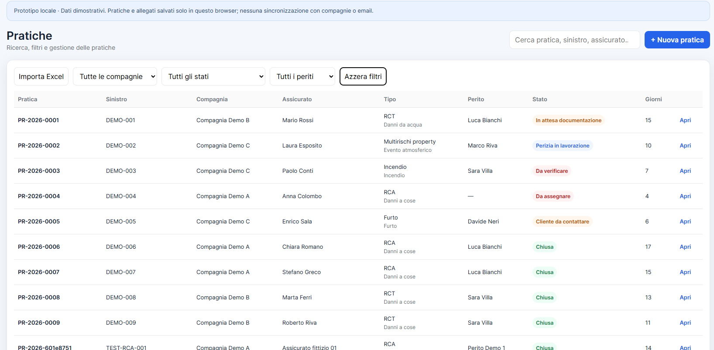
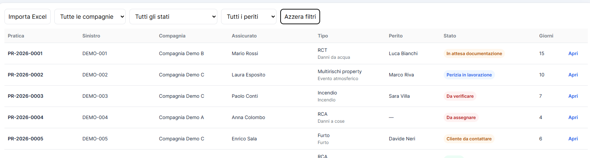
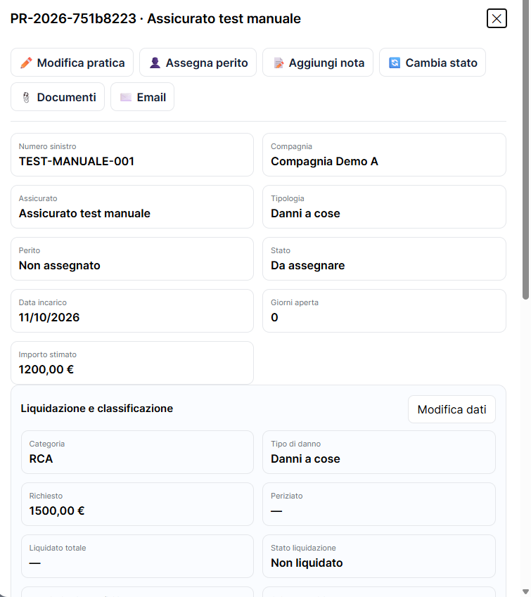

Gestione centralizzata di incarichi, periti, documenti, email e scadenze.
DEMO INTERATTIVA · STUDI PERITALI
Le pratiche sotto controllo. Lo studio più organizzato.
PeriziaFlow AI riunisce in un unico ambiente le operazioni quotidiane dello studio peritale: pratiche, incarichi, periti, documenti, stati di lavorazione e scadenze. Meno tempo nella gestione delle pratiche. Più controllo sul lavoro dello studio. Scopri subito il prototipo interattivo, con dati esclusivamente dimostrativi.
✓ Accesso immediato alla demo
✓ Solo dati fittizi e dimostrativi
✓ Versione commerciale in progettazione

IL PROBLEMA
Quando la pratica è divisa tra email, cartelle, Excel e gestionale, il tempo si perde nei passaggi.
Informazioni sparse
Email, allegati e note non sempre sono immediatamente collegati alla pratica corretta.
Controlli ripetitivi
Scadenze, documenti mancanti, pratiche ferme e compensi richiedono verifiche continue.
Poca visibilità
Responsabili e back office faticano ad avere una fotografia unica dello stato delle lavorazioni.
PER CHI È PENSATO
Agenzie peritali
Studi fiduciari
Back office sinistri
Per realtà che gestiscono molte pratiche e hanno bisogno di un flusso più ordinato.
Visibilità sulle lavorazioni, assegnazioni e attività amministrative collegate.
Riduzione di controlli manuali, informazioni sparse e passaggi ripetitivi.
SCHERMATE REALI DEL PROTOTIPO
Guarda il gestionale come appare nella demo.
Niente mockup generici: qui vedi alcune schermate autentiche del prototipo già collaudato, con dati esclusivamente dimostrativi.
Elenco pratiche e controllo operativo
Ricerca veloce, filtri per compagnia, stato e perito, con visibilità immediata su giorni aperti e avanzamento.

Filtri e importazione Excel
Le pratiche possono essere filtrate e importate da file Excel, così da ridurre inserimenti ripetitivi e controlli manuali.

Dettaglio pratica completo
Scheda pratica con dati principali, importi, classificazione e azioni rapide per documenti, note, perito e stato.
FUNZIONI DEL PROTOTIPO
Il flusso operativo, riunito in un solo ambiente.
01
Pratiche
Ricerca, filtri, stato, perito assegnato, giorni di apertura e dettaglio completo.
02
Documenti
Documentazione collegata direttamente alla pratica con apertura in una nuova scheda.
03
Importazione Excel
Caricamento guidato delle pratiche da fogli Excel, con controlli dei dati importati.
04
Assegnazioni
Assegna il perito e aggiorna gli stati di lavorazione delle pratiche.
05
Scadenze
Pratiche ferme, attività da completare e solleciti in evidenza.
06
Importi e backup
Gestione degli importi di pratica ed esportazione e ripristino dei dati dimostrativi.
ESEMPIO DI FLUSSO
Dall'incarico alla chiusura della pratica.
1Arriva l'incarico
I dati principali vengono raccolti nella pratica.
2Si assegna il perito
Con visibilità su zona, specializzazione e carico.
3Si gestiscono documenti e note
Tutto resta collegato alla stessa pratica.
4Si controllano stato e scadenze
Le attività critiche emergono dalla dashboard.
5Si chiude e si passa all'amministrazione
Gli importi e lo stato della pratica sono consultabili.
DEMO INTERATTIVA
Apri a schermo intero
Esplora il gestionale, direttamente dal browser.
Prototipo pubblico con dati dimostrativi. Non inserire dati personali, documenti riservati o pratiche reali. Le informazioni inserite vengono conservate localmente nel browser: non sono sincronizzate tra computer.
1. Apri una pratica
Consulta il dettaglio di una pratica e verifica come sono organizzati i dati principali.
2. Prova i filtri
Filtra per compagnia, stato o perito per vedere come si restringe l’elenco.
3. Esplora documenti e backup
Controlla l’archivio documentale e le funzioni dimostrative di esportazione e ripristino.
PARLIAMO DELLE ESIGENZE DEL TUO STUDIO
Vuoi valutare PeriziaFlow AI per il tuo studio?
Presentiamo una demo già collaudata e raccogliamo le esigenze degli studi prima dello sviluppo della versione commerciale. Possiamo confrontarci sulle funzioni necessarie, senza richiedere l’invio di pratiche o documenti reali.
- Analisi del flusso attuale
- Dimostrazione delle funzioni già disponibili
- Valutazione di installazione locale o cloud del cliente
- Nessuna necessità iniziale di condividere dati sensibili reali
Richiedi una presentazione
Il pulsante apre il tuo programma email con un messaggio precompilato verso Dfois Consulting. Nessun dato viene salvato dal sito.ROADMAP
Due modalità previste per la versione commerciale.
01Installazione presso lo studioApplicazione e dati su infrastruttura gestita dallo studio, con accesso dalla rete interna.
02Cloud gestito dal clientePossibilità di accesso da sedi diverse su infrastruttura scelta dallo studio.
03Accessi multiutenteRuoli e autorizzazioni per amministratori, collaboratori e periti.
04Stato di sviluppoQueste caratteristiche sono previste per la versione commerciale, non disponibili nella demo attuale.